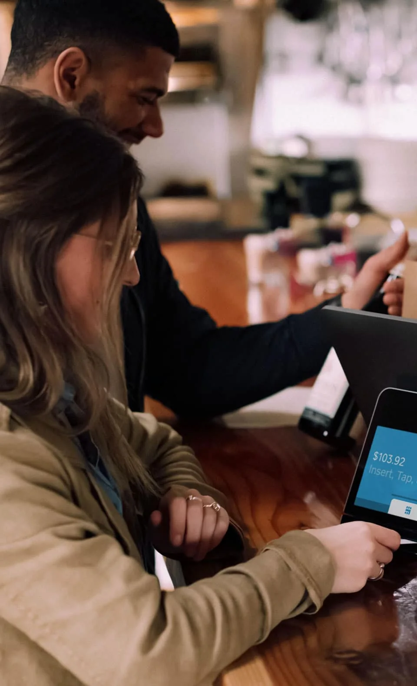
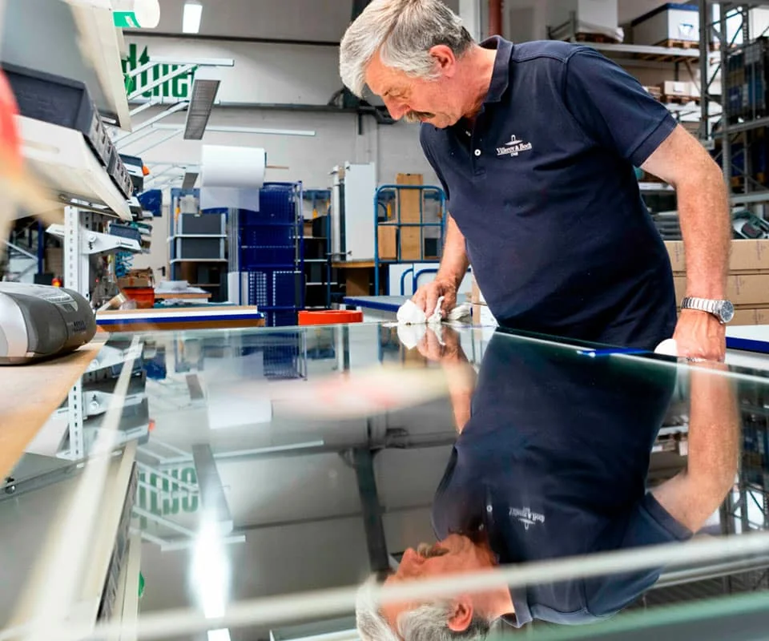
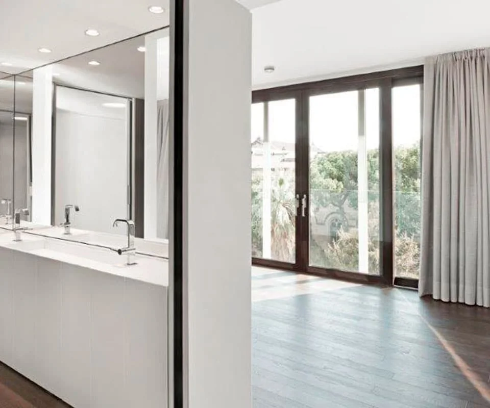

Tu trabajo es imaginar. El nuestro, materializarlo.
Cómo trabajamos con arquitectos, interioristas, hoteles, constructoras y particulares, de la primera muestra a la última pieza instalada.
De la muestra a la obra.

1 de 4
Nos cuentas el proyecto
Ven al showroom, envíanos el dossier con las especificaciones o llámanos. Si eres profesional, reserva Bagno Ceramiche y trae a tu cliente: los materiales y la Bagnoteca estarán a mano.
2 de 4
Elegimos contigo
Marcas, modelos y formatos según los condicionantes técnicos del espacio y tu presupuesto. Lo que no está en exposición lo buscamos en la Bagnoteca, la biblioteca de catálogos de todas las firmas.

3 de 4
Presupuesto y suministro
Condiciones de fabricante como socio fundador de BACO y presupuesto con la máxima inmediatez. Piezas a medida cuando hace falta: el caño MEM del Hotel Arts, los mosaicos de Florim del Intercontinental.

4 de 4
Obra e instalación
Visitas de obra concertadas para resolver la instalación y la técnica in situ. Y cuando el proyecto ya vive, servicio posventa y recambios.
Con quién trabajamos
Cuatro maneras de trabajar con nosotros. Elige la tuya y cuéntanos el proyecto: te respondemos en horario de tienda.
Un espacio en el showroom de Viladomat 118 pensado como apoyo a tus proyectos. Reserva hora y ven a trabajar, o reúnete aquí con tus clientes, con los medios técnicos, los materiales y la Bagnoteca al alcance de la mano.
Asesores con décadas de experiencia en marcas, productos y técnica
Visitas al showroom a solas o con tus clientes, a tu horario
Bagnoteca: catálogos de todas las firmas, física y online
Visitas de obra concertadas
Visitas a las fábricas de los principales fabricantes
Proyectos internacionales con nuestro departamento de interiorismo
“
Son unos grandes profesionales y conocen muy bien todo el mundo del baño y la cerámica. Para mí, la tienda más completa y con mejor servicio de la zona.
Diecisiete personas, desde 1977.
Conocen las marcas, los productos, la técnica y la obra. Fundada por Tono Rigau; socio fundador de BACO, la central de compras del sector, desde 2003.
 2 de 4
2 de 4